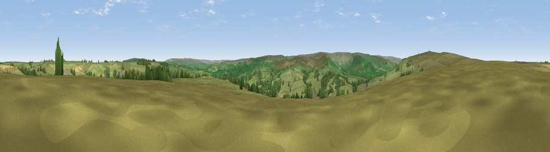

Viewpoint near Lealholm
#26348 in England · top 57% of its area beats it · near LealholmWhere it is
The exact computed spot (NZ 76725 08675). Click the marker for map links.
The view, rendered

A 360° render of this exact spot computed from the terrain model, tree cover and land cover — summer colours, afternoon light, calibrated against photographs of famous viewpoints. Real trees, hedges and buildings will differ in detail.
The panorama
Grey silhouette: terrain skyline in each direction (720 bearings, Earth curvature and refraction included). Dashed green: skyline with trees (+15 m) and buildings (+8 m) as obstacles. Blue strip: how far the ground is visible on each bearing.
Where the view opens
Wedge length = distance to the farthest visible ground on that bearing (vegetation-aware). Rings at 10, 25 and 50 km.
What fills the view
84% grassland · 12% woodland · 2% cropland ·
Angular shares of the visible panorama (visual magnitude), not map area. Landscape diversity 0.23 (0–1 Shannon).
Key numbers
More beautiful places nearby
The staircase of upgrades: each row has a higher view potential than everything closer. Driving times are estimates from straight-line distance, calibrated against real road routing — check an actual route before setting out.
| Place | Direction | Drive | Score |
|---|---|---|---|
| Danby Beacon | WNW · 3 km | ~7 min | 73.4 |
| Viewpoint near Roxby | NNE · 6 km | ~12 min | 78.2 |
| Viewpoint near Lythe | NE · 9 km | ~17 min | 79.7 |
| Viewpoint near Aislaby | E · 9 km | ~18 min | 79.9 |
| Viewpoint near Eskdaleside | ESE · 9 km | ~18 min | 80.7 |
| Viewpoint near Lythe | NE · 9 km | ~18 min | 81.3 |
| Beacon Hill | NNE · 10 km | ~19 min | 82.3 |
| Viewpoint near Easington | N · 11 km | ~21 min | 86.9 |
54.46766, -0.81772 · source: screening · position refined by local search. Computed location — check access rights before visiting.